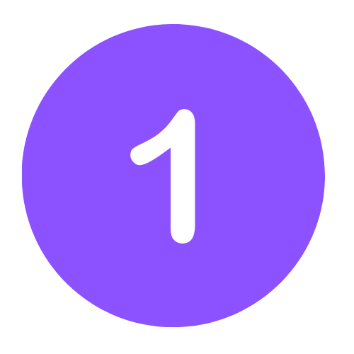

.icon-placeholder {
    width: 20%; /* Changed from previous width */
    height: auto; /* Maintain aspect ratio */
    border-radius: 60%;
    display: flex;
    justify-content: center;
    align-items: center;
    margin-right: 20px; /* Add margin to the right of the icon */
}
.text-content {
    width: 70%; /* Ensure text takes 70% of the container */
    display: flex;
    flex-direction: column;
    justify-content: center;
    line-height: 1.6; /* Increase line height for better readability */
    /* ...existing styles... */
}

.feature-item {
    display: flex;
    align-items: center;
}

/* Optional: Adjust image size within the icon-placeholder if necessary */
.icon-placeholder img {
    width: 60%; /* Adjust as needed */
    height: auto;
}


   
   
   
   <!-- Insert star_email.html content above the form section -->
    <div class="content">
        <main class="container mx-auto py-8">
            <!-- Features Section -->
            <h2 class="business-case-heading">Case in Action</h2>
            <br>
                    <!-- Feature Item 1 -->
                    <div class="content gradient-border flex items-center feature-item">
                        <div class="icon-placeholder">
                            
                        </div>
                        <div class="text-content">
                            <h2 class="text-lg font-semibold mb-2">Situation</h2>
                            <p class="text-gray-600 text-lg">
                                A few years back, I was working with a food packaging company, and while we had Google Ads bringing in traffic like a free buffet, our organic traffic was, well… starving. The site’s conversion rate was a sad 1.8%, and visitors barely stuck around, averaging just 2.1 pages per session. Management, in their infinite wisdom, declared that organic traffic should be a 50/50 split with paid ads. Simple, right? Just tell Google to love us more! But no, we had to earn it. So, we rolled up our sleeves and set ambitious goals: a 5% organic conversion rate, 80% of pages indexed, a page speed score of 90+, and keyword rankings that would put us on the first two pages for at least 20-50 keywords. Easy-peasy… or so we thought.                            </div>
                    </div>
                    <!-- Feature Item 2 -->
                    <div class="content gradient-border flex items-center feature-item">
                        <div class="icon-placeholder">
                            
                        </div>
                        <div class="text-content">
                            <h2 class="text-lg font-semibold mb-2">Objectives</h2>
                            <p class="text-gray-600 text-lg">
                                Execution was like assembling IKEA furniture without instructions. We started with the basics—adding proper tags, conducting deep keyword research (including long-tail and high-ranking potential ones), and stuffing (ethically) those keywords where they belonged. Images got alt text so Google could see them, and we introduced snazzy snippets—customer reviews, feedback, and other trust-building elements. Internal linking became our new obsession, connecting pages like a well-woven spiderweb. We mapped keywords, optimized URLs, and even gave our images a diet plan via compression. Essentially, we Marie Kondo-ed the website, making sure everything sparked SEO joy.                            </div>
                    </div>
                    <!-- Feature Item 3 -->
                    <div class="content gradient-border flex items-center feature-item">
                        <div class="icon-placeholder">
                            
                        </div>
                        <div class="text-content">
                            <h2 class="text-lg font-semibold mb-2">Actions Taken</h2>
                            <p class="text-gray-600 text-lg">
                                The results? Oh, they were chef’s kiss. In just nine months, organic traffic went from 35% to a solid 49%. Organic conversion rate? Skyrocketed to 8% in just six months. Google also decided we were worthy and indexed 90% of our pages. Even our page load speed got a glow-up—hitting 88 out of 100 (okay, not quite 90, but hey, near perfection is still a win). The bounce rate took a much-needed dive, and rankings climbed like a stock after an Elon Musk tweet.                            </div>
                    </div>
                    <!-- Feature Item 4 -->
                    <div class="content gradient-border flex items-center feature-item">
                        <div class="icon-placeholder">
                            
                        </div>
                        <div class="text-content">
                            <h2 class="text-lg font-semibold mb-2">Results</h2>
                            <p class="text-gray-600 text-lg">
                                Takeaways? On-page SEO isn’t a one-and-done deal—it’s a meticulous, long-haul effort. It’s about structure, relevance, and making both users and search engines happy. And if you do it right, the results come faster than you’d expect. Plus, it means you don’t have to keep shelling out cash to Google Ads like it’s a never-ending cover charge at an exclusive club. SEO is the VIP pass to sustainable traffic, and I’d say we definitely got in.
                        </div>
                    </div>
    
    </div>